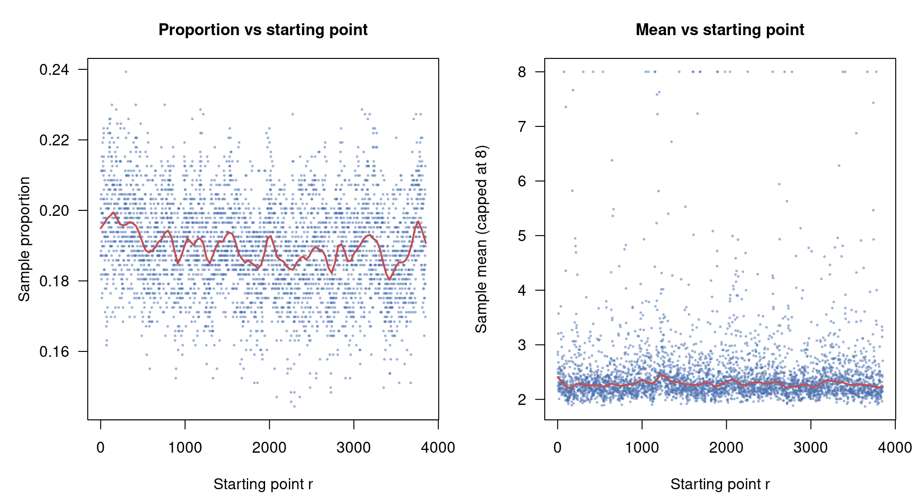
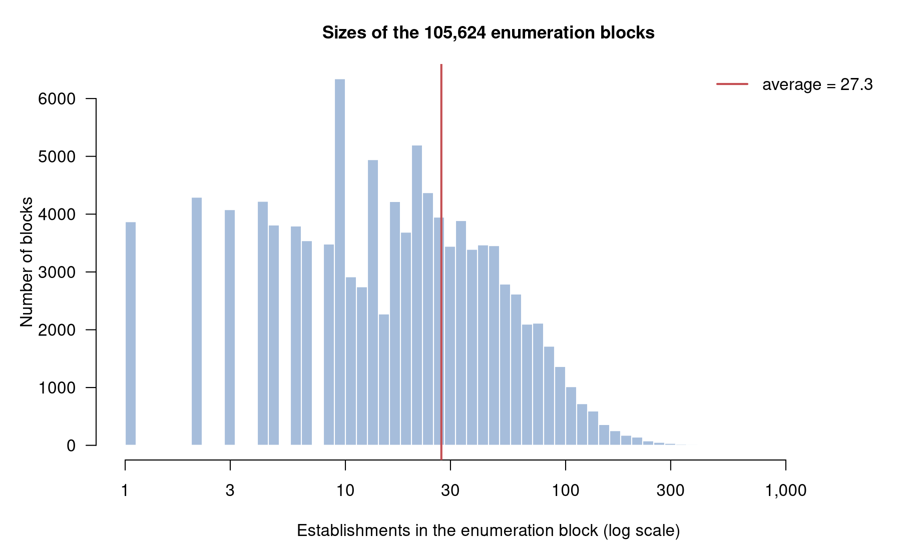
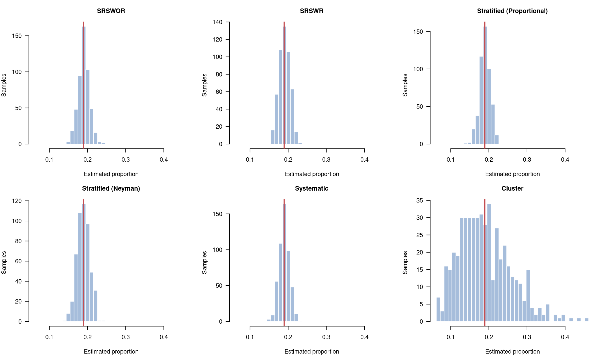

Sampling Techniques (STA405-6) · Group Mini-Project
Design, Estimation and Efficiency Comparison of Sampling Techniques
All {{N}} establishments in Karnataka · Sixth Economic Census 2012-13 (MoSPI)
Member 1SRSWOR & SRSWR, sample size, data & frame
Member 2Stratified sampling, allocation comparison
Member 3Systematic sampling, charts & visuals
Member 4Cluster sampling, ICC & efficiency, errors
Member 5Comparison, F-tests, official statistics
Opening (Member 1, 15 s): "Our project compares SRS, stratified, systematic and cluster sampling on real government data: every establishment in Karnataka from the Sixth Economic Census. Each of us will present one method; Member 5 compares them."
Survey design
One population, one sample size, four designs
| Element | Our choice |
|---|
| Population | All {{N}} establishments in Karnataka (EC6, 2012-13) |
| Variable Y | Persons employed per establishment (mean and total) |
| Proportion P | Share of establishments owned by a woman ({{P_pct}}%) |
| Sample size | n = {{n}} for every method |
| Strata | 4 revenue divisions |
| Systematic list | Ordered by district, tehsil, town, ward, block; k = {{k}} |
| Clusters | {{Nc}} enumeration blocks; {{n_c}} sampled |
{{checks_pass}} / {{checks_total}}
checks against MoSPI's official figures matched: the data is genuine
{{Ybar}}
true mean workers (median {{median}}, largest {{maxY}})
{{P}}
true proportion female-owned
Tables 0.1, 1.5, 1.6 · output/00_data_verification, output/01_srs
Member 1 (20 s): "Because we have the full census, we know the true values and can measure every design's real error. All designs use n = {{n}}, so the comparison is fair."
Member 1 · Unit 1 · Data and frame
The data is extremely skewed, and that drives everything
- {{m1_single_pct}}% of establishments have a single worker; a few have thousands.
- Coefficient of variation = {{m1_cv}}.
- Data cleaning: no missing values, no zero workers; totals always add up.
- Possible recording errors: {{m1_suspect}} single-owner businesses report 10,000+ workers ({{m1_exact}} exactly 10,001 or 10,002). Kept as official, but flagged.
Skewness makes the mean hard to estimate; the proportion is well-behaved.
Tables 1.1-1.4, Figure 1.1 · output/01_srs
Say: "Figure 1.1 shows the key problem: {{m1_single_pct}}% of establishments have one worker, but a few employ thousands. We cleaned and checked the data and found {{m1_suspect}} suspicious values of about 10,000 workers for single-owner businesses. We kept them, as official data, and showed they change the SD from {{m1_sd_wo}} to {{m1_sd_all}}."
Member 1 · Unit 1 · Sample size
n = {{n}}, fixed by the precision required for P
| Step | Value |
|---|
| Margin of error d for P (95%) | {{m1_d}} |
| n0 = z²PQ / d² | {{m1_n0}} |
| n = n0 / (1 + (n0 - 1)/N) | {{m1_nreq}} |
| Chosen n (smallest divisor of N ≥ {{m1_nreq}}) | {{m1_nchosen}} |
| k = N / n | {{k}} |
| Margin achieved for P | {{m1_dach}} |
| n needed for the MEAN within 10% | {{m1_nmean10}} |
{{n}} × {{k}} = {{N}} exactly, as systematic sampling (N = nk) requires.
Table 1.7, Figure 1.2 · output/01_srs
Say: "To estimate P within {{m1_d}} we need {{m1_nreq}} establishments. We use {{n}}, because {{n}} times {{k}} equals N exactly, which systematic sampling needs. The mean would need {{m1_nmean10}} units for 10% precision, so we fix n by the proportion."
Member 1 · Unit 1 · SRSWOR vs SRSWR
Both CIs contain the truth; the two schemes are practically equal
| Design | Parameter | Estimate | SE | 95% CI | Exact SE |
|---|
{{m1_srs_rows}}
True mean {{Ybar}} · true P {{P}} · fpc = 1 - n/N = {{m1_fpc}}
- V(SRSWR) / V(SRSWOR) = (N-1)/(N-n) = {{m1_ratio}}: only {{m1_ratio_pct}}% worse.
- A single sample's SE depends on whether it caught a very large establishment; the exact SE ({{m1_exact_se}}) is the same for both.
Tables 1.8-1.11, Figure 1.3 · output/01_srs
Say: "Both confidence intervals contain the true values. The two SEs for the mean differ only because of which establishments each sample happened to include; the exact SE is {{m1_exact_se}} for both. SRSWR is only {{m1_ratio_pct}}% less precise, because n is a tiny fraction of N."
Member 2 · Unit 2 · Strata and allocation
Four revenue divisions: means similar, SDs very different
| Stratum | Nh | Mean | SD Sh | Ph | nh prop. | nh Neyman |
|---|
{{m2_strata_rows}}
- Proportional: nh = n Nh/N · Neyman: nh = n NhSh / Σ NhSh
- Neyman moves units to the large and variable strata.
Tables 2.1-2.2, Figure 2.2 · output/02_stratified
Say: "I stratified by Karnataka's four revenue divisions; every establishment's division is known in advance. The means are close, {{m2_mean_range}}, but the SDs range from {{m2_sd_range}}. Neyman allocation uses that and gives Bengaluru {{m2_blr_ney}} units instead of {{m2_blr_prop}}."
Member 2 · Unit 2 · Gain in precision
Neyman gains {{m2_gain_ney}}% for the mean; proportional gains nothing
| Parameter | RE proportional | RE Neyman |
|---|
| Mean | {{m2_re_prop_mean}} | {{m2_re_ney_mean}} |
| Proportion | {{m2_re_prop_p}} | {{m2_re_ney_p}} |
RE = V(SRSWOR) / V(design), exact variances
- VSRS - Vprop ≈ (1-f)/n · Σ Wh(Ȳh - Ȳ)²: strata explain only {{m2_share_pct}}% of S², so no gain.
- Vprop - VNey = (1/n) · Σ Wh(Sh - S̄)² = {{m2_vdiff}}: SDs differ, so Neyman gains.
- Neyman (optimised for the mean) is worse for P; the allocation optimal for P gives RE {{m2_re_neyP}}.
Tables 2.3-2.7, Figure 2.1 · output/02_stratified
Say: "Figure 2.1 shows why the gain is limited: inside every division most businesses have one or two workers and a few have thousands. Cochran's formulas explain the results exactly: proportional gains come from different means, and here they barely differ; Neyman's extra gain comes from different SDs, {{m2_gain_ney}}% here. Neyman was optimised for the mean, so it is worse for the proportion."
Member 2 · Unit 2 · ANOVA and basis of stratification
ANOVA: H0 all stratum means equal (5% level)
| Test (proportional sample, n = {{n}}) | Statistic | p-value |
|---|
| One-way ANOVA, F(3, 744) | {{m2_F}} | {{m2_p}} |
| Kruskal-Wallis (no normality needed) | {{m2_kw}} | {{m2_kw_p}} |
- ANOVA: {{m2_decision}}. Normality fails (skewness {{m2_skew}}), and a few huge values hide the differences.
- Kruskal-Wallis on ranks: {{m2_kw_decision}}.
- Extra: activity type is the better basis for P (RE {{m2_act_re_p}}; female ownership {{m2_act_range}}).
Tables 2.8-2.11, Figure 2.3 · output/02_stratified
Say: "The ANOVA on my sample gives F = {{m2_F}}, p = {{m2_p}}, so I {{m2_decision}}: ANOVA assumes normal data, and a few huge values inflate the within-group variance. The Kruskal-Wallis test, which uses ranks, gives p = {{m2_kw_p}}, so I {{m2_kw_decision}}. As an extra, activity type would be a better basis for the proportion."
Member 3 · Unit 3 · Systematic sample
k = {{k}}, random start r = {{m3_r}}, and all {{k}} possible samples
- List ordered by location code; every {{k}}th establishment from r = {{m3_r}}.
- Our sample: mean {{m3_mean}} (SE {{m3_mean_se}}), P {{m3_p}} (SE {{m3_p_se}}).
- Average of all {{k}} sample means = true value exactly, so the estimator is unbiased.
- CIs containing the truth: {{m3_cover_mean}}% for the mean, {{m3_cover_p}}% for P.
The mean's CIs fail because most samples miss the rare giant establishments.
Tables 3.1-3.3, Figure 3.1 · output/03_systematic
Say: "With N = {{N}} and n = {{n}} the interval is exactly {{k}}; our random start was {{m3_r}}. There are only {{k}} possible samples, so I calculated all of them. Figure 3.1 shows they average exactly to the true value, so the estimator is unbiased."
Member 3 · Unit 3 · Comparison and ANOVA
Best design for the proportion: {{m3_gain_p}}% better than SRS
| Design | RE mean | RE proportion |
|---|
{{m3_cmp_rows}}
- ANOVA, samples as groups: F = {{m3_F_mean}} (p = {{m3_p_mean}}) and F = {{m3_F_prop}} (p = {{m3_p_prop}}), so do not reject H0: the start doesn't matter.
- Each sample spans the whole state, a fine implicit stratification by location.

Figure 3.2: no trend or periodicity
Tables 3.4-3.7, Figure 3.2 · output/03_systematic
Say: "Systematic sampling is {{m3_gain_p}}% more efficient than SRS for the proportion, better than stratifying by division, because walking down a location-ordered list spreads the sample over every district and town. The ANOVA confirms the starting point doesn't matter, and Figure 3.2 shows no trend or periodic pattern."
Member 3 · Unit 3 · Effect of k and of list order
The order of the list is part of the design
| List order | RE mean | RE proportion |
|---|
{{m3_order_rows}}
- On a shuffled list, systematic is just SRS.
- For P, systematic beats SRS at every k tried (RE {{m3_k_range}}).
- For the mean, RE stays close to 1 for every k.
Tables 3.8-3.9, Figure 3.3 · output/03_systematic
Say: "On a randomly shuffled list the advantage disappears, so the gain comes from the order of the list. Sorting by activity would help the proportion even more. Changing k changes the sample size, but systematic stays better than SRS for the proportion."
Member 4 · Unit 4 · Clusters
{{n_c}} enumeration blocks, every establishment in them
{{Nc}}
blocks in Karnataka
{{m4_Mbar}}
establishments per block
{{n_c}}
blocks sampled (≈ {{m4_units}} units)
| Ratio estimator | Estimate | SE | Exact SE | True |
|---|
{{m4_cl_rows}}
ȳ = Σyi / ΣMi · CI uses t with {{m4_df}} df · fpc = {{m4_fpc}}

Figure 4.1: unequal sizes, hence the ratio estimator
Tables 4.1-4.3, Figure 4.1 · output/04_cluster
Say: "My clusters are census enumeration blocks: {{Nc}} of them, about {{m4_Mbar}} establishments each. I sampled {{n_c}} blocks and took every establishment in them. Block sizes vary from 1 to {{m4_maxM}}, so I used the ratio estimator, total workers divided by total establishments."
Member 4 · Unit 4 · ANOVA and intraclass correlation
Businesses in the same block are alike: ICC = {{m4_icc_p2}} for P
| Workers | Female-owned |
|---|
| ANOVA F (p) | {{m4_F_y}} | {{m4_F_p}} |
| ICC ρ | {{m4_icc_y}} | {{m4_icc_p}} |
| deff, formula 1 + (M̄-1)ρ | {{m4_deff_f_y}} | {{m4_deff_f_p}} |
| deff, actual | {{m4_deff_a_y}} | {{m4_deff_a_p}} |
| RE vs SRS | {{m4_re_y}} | {{m4_re_p}} |
- Reject H0 (no clustering) for both variables.
- ρ = (MSB - MSW) / (MSB + (m0-1)MSW).
- A block of {{m4_Mbar}} is worth about {{m4_worth}} independent establishment(s) for P.
Tables 4.4-4.6, Figure 4.2 · output/04_cluster
Say: "The ANOVA across all blocks gives an intraclass correlation of {{m4_icc_p2}} for female ownership: businesses in the same block are alike, as Figure 4.2 shows. So the design effect is about {{m4_deff_a_p}}, and cluster sampling is only {{m4_re_p_pct}}% as efficient as SRS for the proportion, {{m4_re_y_pct}}% for the mean."
Member 4 · Unit 4 · Cluster size and errors
Bigger clusters, bigger loss; chosen for cost, not precision
| Cluster | Avg size | deff for P |
|---|
{{m4_size_rows}}
- Fewer, bigger clusters cannot represent the state (Bengaluru city alone is one "town").
- Non-sampling errors: excluded activities (crop production, public administration), missed informal units, recording errors (10,001 workers), owner's sex missing for {{m4_nonprop_pct}}% of establishments (non-proprietary).
Tables 4.7-4.8, Figure 4.3 · output/04_cluster · TEAM/member4_cluster.md §8
Say: "Figure 4.3 shows that bigger clusters, like wards or whole towns, are far worse. Cluster sampling is chosen for low cost: {{n_c}} compact blocks instead of {{n}} scattered addresses. The main non-sampling errors we found are excluded activities, probable recording errors and the definition of owner's sex."
Member 5 · Comparison of designs
Systematic best for P; Neyman best for the mean; cluster worst
| Design | Mean (abs. error) | P (abs. error) | RE mean | RE P |
|---|
{{m5_master_rows}}
True mean {{Ybar}} · true P {{P}} · full table with SE and CI: Table 5.1
Table 5.1, Figure 5.2 · output/05_comparison
Say: "Table 5.1 compares all six designs at about {{n}} establishments each. For the proportion systematic sampling is most efficient, {{m5_gain_best_p}}% better than SRS; for the mean Neyman stratification is best, {{m5_gain_best_m}}% better. Cluster sampling is far worse, because businesses in the same block are alike."
Member 5 · F-tests and 500-repeat simulation
F-tests work for P; for the mean, normality fails
| 500 repeats, F(499, 499), proportion | F (p) | Agrees with exact? |
|---|
{{m5_f_rows}}
- H0: equal variances · H1: the larger is less precise · 5% level.
- P: simulated SE within {{m5_se_within}}% of exact; CIs cover {{m5_cov_p}}% (cluster {{m5_cov_p_cl}}%).
- Mean: estimates very skewed, CIs cover only {{m5_cov_mean}}%; {{m5_wrong}} points the wrong way.

Figure 5.4: 500 estimates of P per design
Tables 5.2-5.4, Figures 5.3-5.4 · output/05_comparison
Say: "We repeated every design 500 times. For the proportion the variance formulas are confirmed and every F-test agrees with the exact variances. For the mean the estimates are so skewed that the F-test's normality assumption fails; {{m5_wrong}} points the wrong way. That shows why the assumption matters."
Member 5 · Recommendation and official statistics
Recommendation: systematic sampling on the location-ordered list
- Precision: best for P (RE {{m5_re_best_p}}), as good as SRS for the mean (RE {{m5_re_sys_mean}}).
- Cost: one random number, then every {{k}}th establishment.
- Convenience: automatically spread over every district.
- If the mean matters most: Neyman stratified. Cluster: cheapest, least precise (RE {{m5_re_cl_p}} for P).
| Official statistics link: Sixth Economic Census |
|---|
| Agency | CSO, MoSPI, with State DES |
| Design | Complete count, no sampling |
| Collection | Face-to-face, every structure in 2.45 million census EBs, Jan 2013-Apr 2014 |
| Purpose | A frame for follow-up sample surveys (NSS) |
| Limits | Excludes crop production, plantation and public administration; misses informal units |
Table 5.5 · official facts from the MoSPI EC6 documentation on the census DVD
Say: "We recommend systematic sampling from the location-ordered census list: precise for the proportion, as good as SRS for the mean, and simple and cheap. Our data comes from the Economic Census by MoSPI's CSO, a complete count used as the frame for official sample surveys, which is exactly how we used it."
Conclusion
What we learned
- A design helps only if it uses structure in the data: stratification needs different groups, systematic needs a meaningful order, and clustering suffers when groups are internally alike.
- With extremely skewed data (median {{median}}, max {{maxY}}) no design estimates the mean much better than SRS; the proportion is easy.
- Single-sample SEs and F-tests can mislead with skewed data; exact variances and simulation reveal the truth.
- Recommended: systematic sampling on the location-ordered census list.
Thank you
Questions?
Code, tables and figures: analysis/ and output/
Member 5 closes (20 s): "In short: designs help only when they match the structure of the data. For this population we recommend systematic sampling. Thank you, and we're happy to take questions."